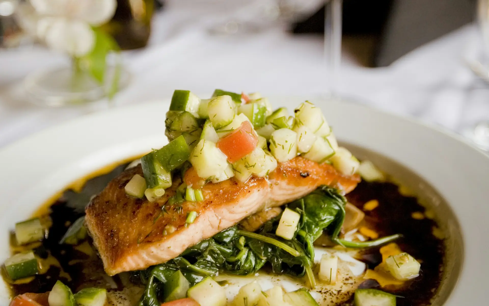
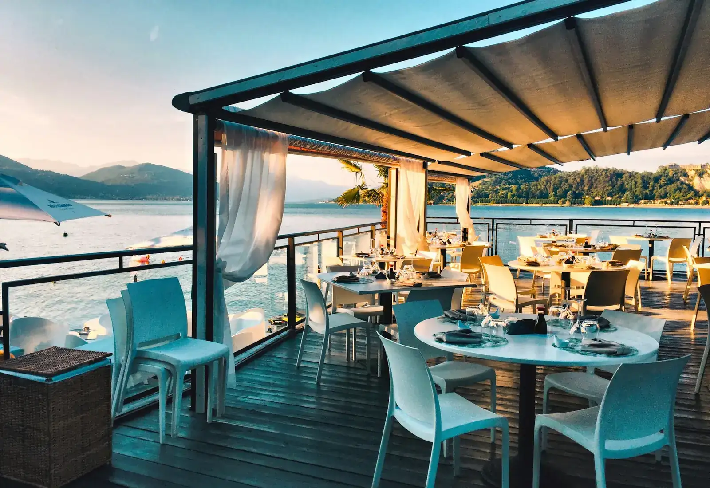
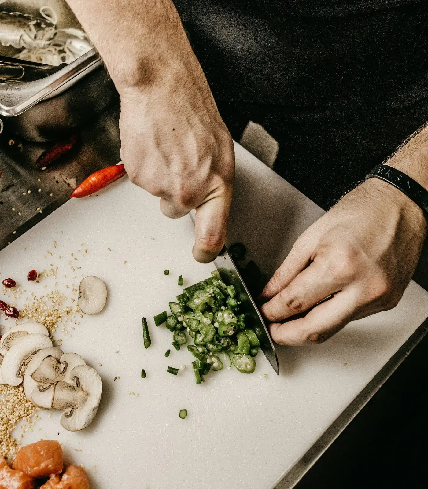
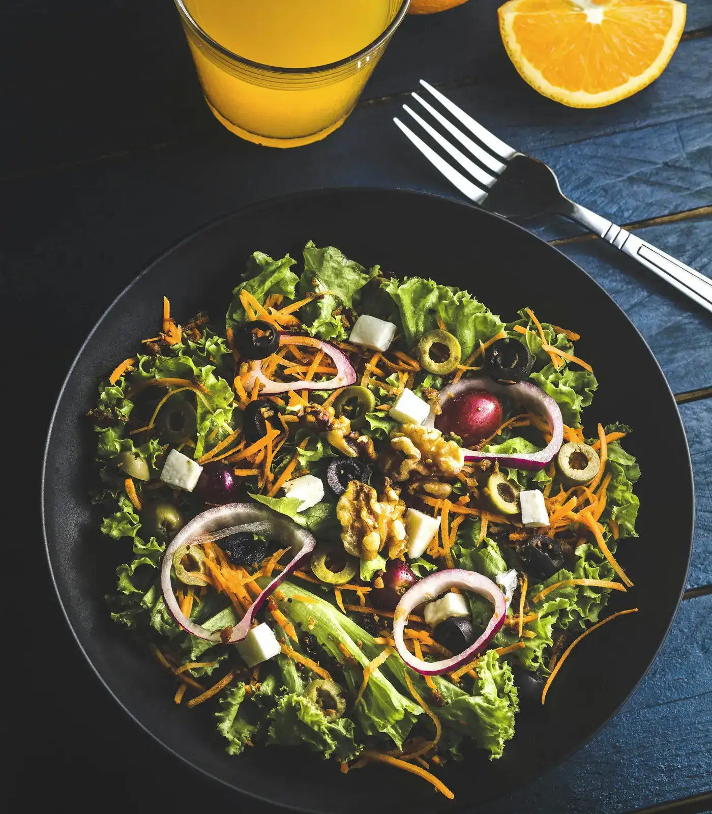

Neighborhood bistro · Marrow Bay
Linden Table
Supper for a small room. A short menu, a long evening, and pudding worth staying for.
Request a tableTuesday to SundayMarrow Bay is fictional
This is a sample project. The menu, the room, and the town are invented. The reservation form stays in the browser.
Gallery
From the room
Photographs from Unsplash, used here as a sample. They are not pictures of a real Linden Table.
-

The terrace, late light -

Before service -

Butter lettuce, in spirit -
A place at the table -
Sea bass, more or less
Hours
When the door is open
| Monday | Closed |
|---|---|
| Tuesday – Thursday | 12:00–15:00, 18:00–22:00 |
| Friday – Saturday | 12:00–15:00, 18:00–23:00 |
| Sunday | 12:00–16:00 |
Visit
14 Linden Walk
Marrow Bay is not a real town, so this is a map placeholder rather than a live map.
Reserve
Ask for a table
Name, email, date, time, and party size are required. The note is optional. On this sample the request stays in your browser.
Thank you, .
This is a sample form. The table was not reserved, and nothing was sent.